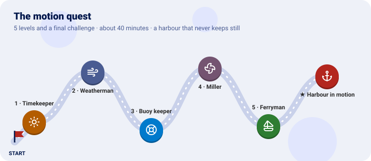
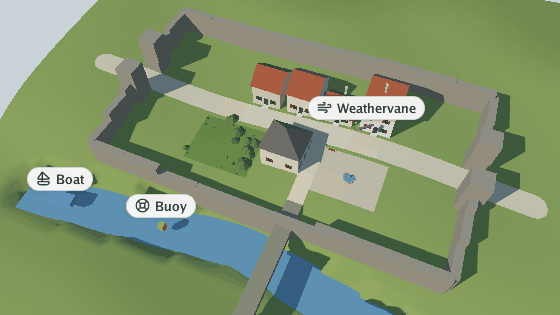
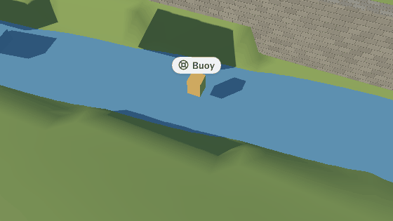
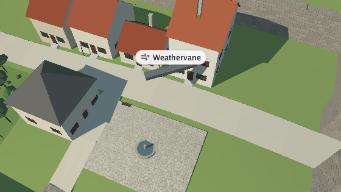
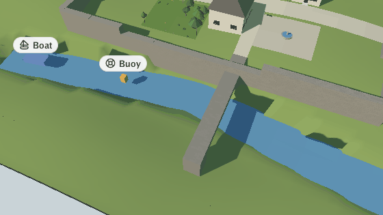
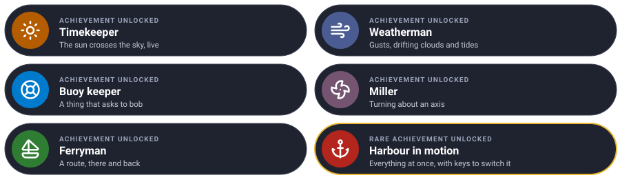

Make a still scene feel alive, one level at a time. Each level teaches one piece of the motion plugin and ends with something moving in the viewer.

We take the village of go-scene-builder’s quest
(any .glb works) and make it move: the day passes, the wind gusts, a buoy bobs on the river, a
weathervane turns and a boat sails a route. You write a tiny plugin of your own that puts the buoy,
the vane and the boat in the world; the motion plugin moves them.
Every level has the same shape: the idea (explained with something from everyday life), the rules, a checkpoint to know it works, and an optional bonus.
You need Go 1.25 and GEOS (sudo apt install libgeos-dev, brew install geos). Clone the projects
side by side and make a folder with a scene in it:
git clone https://github.com/akrck02/go-renderer
git clone https://github.com/akrck02/go-scene-builder
git clone https://github.com/akrck02/go-simulator
git clone https://github.com/akrck02/go-simulator-motion
mkdir lively && cd lively
cp ../village/village.glb .
Everything here runs live, in go-simulator’s viewer:
go run ../go-simulator/cmd/simulator -rules rules.yaml village.glb
The motion rules belong on a realtime clock: they follow the seconds you watch, and the viewer’s
P (pause) and , . (slower, faster) apply to them. The animations below were made with
the same rules on a stepped clock of half-second steps, captured with -advance.
| Mission | Pieces | Time |
|---|---|---|
| The day passes in two minutes | day_cycle, a real-time stage, a toggle key |
5 min |
The sun does not move: the earth turns, and the sun seems to circle round the sky’s pole. The
day_cycle rule turns it round the pole once every seconds_per_day; the renderer works out day,
twilight and night from how high it is, and the stars and the moon follow.
rules.yaml:
plugins:
- name: motion
command: [go, run, .]
directory: ../go-simulator-motion
stages:
- name: harbour
clock: realtime
rules:
- {rule: day_cycle, with: {seconds_per_day: 120}, toggle_key: T}
The shadows turn, the light goes gold, the village falls into night and the sun comes up again, every two minutes. T stops the day where it is, and starts it again.

Learn more: Motions: the environment
| Mission | Pieces | Time |
|---|---|---|
| Wind that gusts, clouds that drift, a sea that rises and falls | gusts, cloud_drift, tides |
5 min |
Real wind is never steady: it breathes, stronger and weaker, swinging a little either way. The
gusts rule varies the wind the scene started with, as a sum of three slow waves that never quite
repeat; plants made to sway bend with it, and cloud_drift moves the clouds along it. tides
turns the tide’s clock, about twice a day, if the scene has a tide.
Each rule only changes what the scene already has: no wind in the scene, no gusts.
- {rule: gusts, with: {variation: 0.5, veering: 0.35}}
- rule: cloud_drift
- {rule: tides, with: {seconds_per_day: 120}, toggle_key: M}
The garden’s trees sway harder and softer; if the sky has clouds they drift with the wind. The village has no tide (its river has no tidal grid); a scene with one, such as go-renderer’s sample island, rises and falls, and M stops it.
| Mission | Pieces | Time |
|---|---|---|
| A buoy that bobs on the river | entity_motion, bob, a plugin that adds things |
10 min |
The motion plugin moves things that ask to be moved: an entity with a bob property bobs, one
with spin spins, one with path follows a route. It does not care who put the thing there: a
node of the scene, or another plugin. It is like a dance teacher who teaches whoever comes to
the class with a dance card.
So we write the smallest plugin there is: it adds three things, each with its card, and does nothing else.
props/go.mod:
module example.com/props
go 1.25.6
require github.com/akrck02/go-simulator v0.0.0
replace (
github.com/akrck02/go-simulator => ../../go-simulator
github.com/akrck02/go-renderer => ../../go-renderer
github.com/akrck02/go-scene-builder => ../../go-scene-builder
)
props/main.go:
// Command props is a tiny plugin that puts things in the harbour for the motion plugin to move: a
// buoy that bobs, a weathervane that spins and a boat on a route. It only adds them, once; motion
// reads their properties and moves them.
package main
import (
"log"
"github.com/akrck02/go-simulator/plugin"
"github.com/akrck02/go-simulator/protocol"
"github.com/akrck02/go-simulator/spatial"
"github.com/akrck02/go-simulator/world"
)
type props struct{}
var propsRule = plugin.Definition{
Description: protocol.RuleDescription{
Name: "props",
Summary: "Adds a buoy, a weathervane and a boat that ask the motion plugin to move them.",
Writes: []string{"prop"},
Publishes: []protocol.OutputDescription{plugin.Kind("prop", "a thing that asks for a motion")},
},
New: func(plugin.Parameters) (plugin.Rule, error) { return &props{}, nil },
}
func (rule *props) Start(context *plugin.Context) error {
buoy := spatial.Translation(spatial.Vector{-0.02, 0.0115, 0.026})
context.Add(&world.Entity{Identifier: "buoy", Kind: "prop", Transform: &buoy,
Shape: &world.Shape{Primitive: "box", Size: spatial.Vector{0.0015, 0.002, 0.0015}, Color: &[4]float32{0.9, 0.5, 0.1, 1}},
Properties: map[string]any{"label": "Buoy", "icon": "life-buoy", "bob": map[string]any{"height": 0.0006, "period": 3, "roll": 0.1}}})
vane := spatial.Translation(spatial.Vector{0.018, 0.028, -0.01})
context.Add(&world.Entity{Identifier: "vane", Kind: "prop", Transform: &vane,
Shape: &world.Shape{Primitive: "box", Size: spatial.Vector{0.008, 0.0006, 0.0012}, Color: &[4]float32{0.2, 0.2, 0.2, 1}},
Properties: map[string]any{"label": "Weathervane", "icon": "wind", "spin": map[string]any{"axis": []any{0, 1, 0}, "speed": 1.5}}})
boat := spatial.Identity()
context.Add(&world.Entity{Identifier: "boat", Kind: "prop", Transform: &boat,
Shape: &world.Shape{Primitive: "box", Size: spatial.Vector{0.003, 0.0015, 0.007}, Color: &[4]float32{0.2, 0.35, 0.7, 1}},
Properties: map[string]any{"label": "Boat", "icon": "sailboat",
"path": map[string]any{"points": []any{[]any{-0.05, 0.0115, 0.0295}, []any{0, 0.0115, 0.0215}, []any{0.05, 0.0115, 0.0315}}, "speed": 0.004, "loop": false}}})
return nil
}
func (rule *props) Step(*plugin.Context) error { return nil }
func main() {
log.SetFlags(0)
harbour := &plugin.Plugin{Name: "props", Version: "0.1.0", Rules: []plugin.Definition{propsRule}}
if err := harbour.Serve(); err != nil {
log.Fatal(err)
}
}
Positions are in the scene’s kilometres, [x, y, z], with z growing to the south. Then
cd props && go mod tidy && cd .., and in rules.yaml a second plugin and two rules:
plugins:
- {name: motion, command: [go, run, .], directory: ../go-simulator-motion}
- {name: props, command: [go, run, .], directory: props}
…
- rule: props
- rule: entity_motion
An orange buoy on the river rises and falls every three seconds, rocking a little, with its label. (The vane and the boat move too: the next two levels are about them.)

Add three more, a few metres apart. They bob out of step on their own: the phase comes from where each one is.
for index := 1; index <= 3; index++ {
place := spatial.Translation(spatial.Vector{-0.02 + float32(index)*0.008, 0.0115, 0.026})
context.Add(&world.Entity{Identifier: world.Identifier(fmt.Sprint("buoy-", index)), Kind: "prop", Transform: &place,
Shape: &world.Shape{Primitive: "box", Size: spatial.Vector{0.0015, 0.002, 0.0015}, Color: &[4]float32{0.9, 0.5, 0.1, 1}},
Properties: map[string]any{"bob": map[string]any{"height": 0.0006, "period": 3}}})
}Learn more: Motions: entities
| Mission | Pieces | Time |
|---|---|---|
| A weathervane that turns | spin |
4 min |
A mill’s sails, a weathervane, a wheel: things that turn about an axis from where they rest.
spin gives the axis in the thing’s own frame ([0, 1, 0] is upright) and the speed in radians a
second (6.3 is a turn a second).
The vane in props/main.go already asks for it:
"spin": map[string]any{"axis": []any{0, 1, 0}, "speed": 1.5}
Over the high street, a dark bar turns about itself, a little more than a quarter turn a second.

| Mission | Pieces | Time |
|---|---|---|
| A boat that sails a route and comes back | path, loop |
4 min |
A bus route: a list of stops, a speed, and either a loop (back to the first stop, round again)
or there-and-back. path places the thing on the route at a steady speed, turned to face where it
goes; "loop": false brings it back the way it came.
The boat in props/main.go:
"path": map[string]any{"points": []any{[]any{-0.05, 0.0115, 0.0295}, []any{0, 0.0115, 0.0215}, []any{0.05, 0.0115, 0.0315}}, "speed": 0.004, "loop": false}
4 metres a second, along the river, under the bridge.
The blue boat sails east along the river, under the bridge, and some 25 seconds later turns back.

All of it at once in one real-time stage, and a key for each part: T the day, G the gusts, B the boats and buoys. Start with the day stopped, so the village opens in daylight.
Hint: every rule takes a
toggle_key, andenabled: falsestarts it switched off.
plugins:
- {name: motion, command: [go, run, .], directory: ../go-simulator-motion}
- {name: props, command: [go, run, .], directory: props}
stages:
- name: harbour
clock: realtime
rules:
- rule: props
- {rule: day_cycle, with: {seconds_per_day: 120}, enabled: false, toggle_key: T}
- {rule: gusts, with: {variation: 0.5, veering: 0.35}, toggle_key: G}
- rule: cloud_drift
- {rule: entity_motion, toggle_key: B}
The village lives: its day turns, its wind breathes, and things you added move as they were asked.
| Idea | Difficulty | Hint |
|---|---|---|
| Motions in the scene itself | ⭐ | glTF node extras become properties: "extras": {"bob": {…}} (getting started) |
| A ferry that counts its trips | ⭐⭐ | go-simulator’s quest |
| A town that grows while the day turns | ⭐⭐⭐ | A stepped stage with the urban plugin beside this real-time one |
| You see | Why, and what to do |
|---|---|
| Nothing moves | The rule is off (enabled: false, or its key pressed), or the stage is not realtime and has no pace |
| The day does not change | The scene has no sun direction: scenes from go-scene-builder have one |
| No gusts | The scene starts with no wind: give it one in the scene’s environment |
| The buoy floats in the air or is buried | Its height (0.0115) is in scene kilometres: move it a little up or down |
| An entity bobs instead of following its path | An entity takes one motion: bob wins over spin, spin over path |